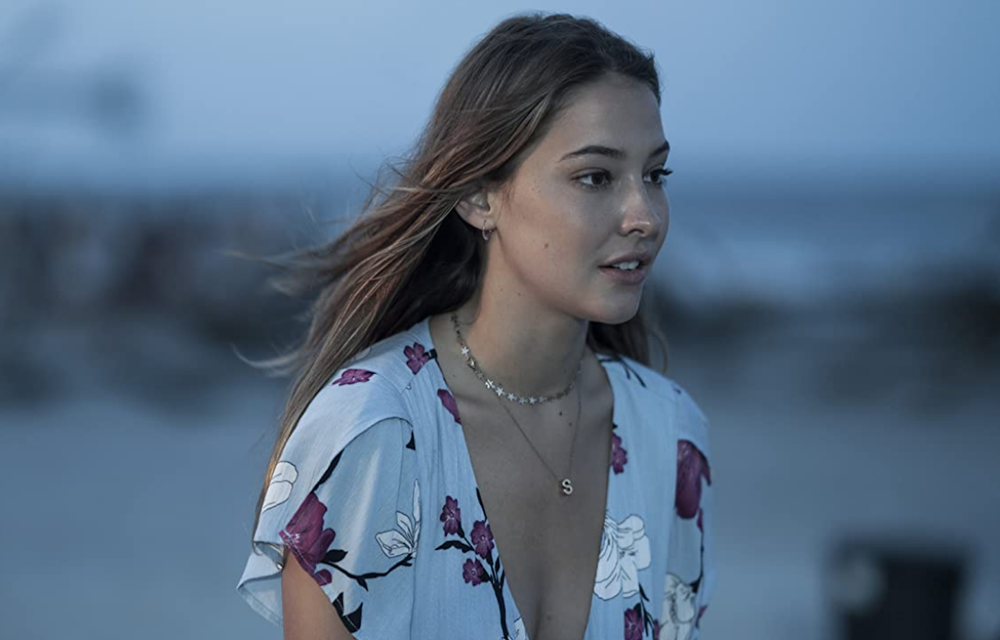
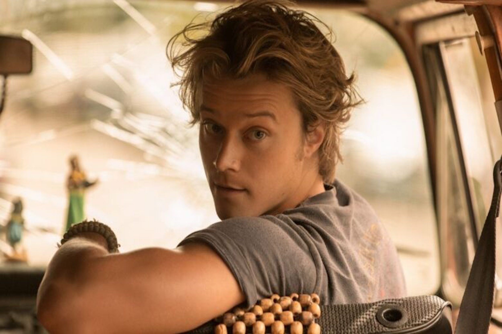
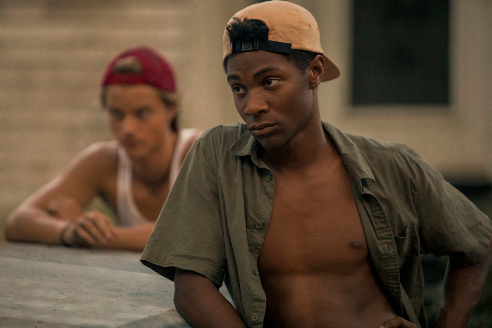
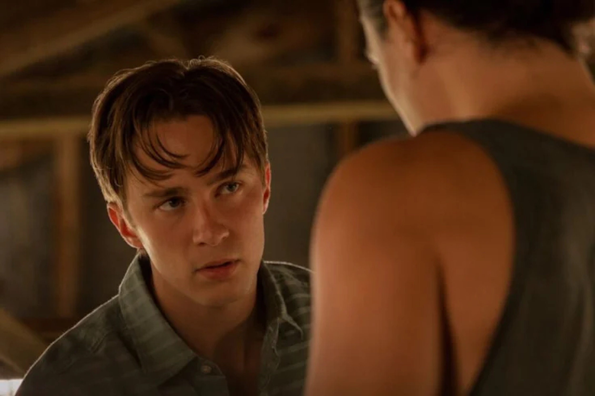
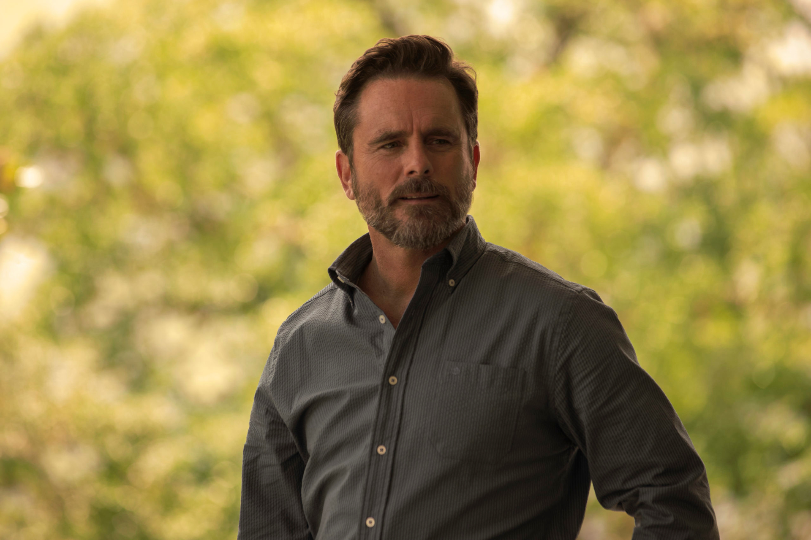

JOHN B John B es un personaje muy valiente, tiene alma de líder, en este capítulo cuida de Sarah como nadie y la ayuda en todo lo que ella necesite. Es una persona honesta, y lucha por lo que le pertenece a su padre.  SARAH Sarah es la ex mejor amiga de Kie, una "princesa Kook". Su familia, especialmente su padre, es muy conocida en el área. Aunque vive en este mundo muy Kook-y, con muchas fiestas y cosas muy elegantes, no se siente como si perteneciera. Hay una parte de ella que siente que no se identifica con la persona que se le dice que sea.
 JJ Es el mejor amigo de John B. Es un poco espontáneo, pero trata de ser logístico al respecto. Una forma en que me gusta explicarlo es como si fuera un pit bull con cafeína que fue lanzado y algo así como una carrera. Protegerá a sus amigos si se trata de eso. Si tiene que pelear, lo hará.  POPE Pope es el cerebro de la operación de "Pogue". Él es quien hace el plan. Es muy real y sabe en su corazón que la única forma de salir del lado pobre de la isla, de donde son todos estos tipos, es que él obtenga una beca. a sido bendecido con este gran cerebro y su familia y la escuela lo presionan para obtener esta beca, a pesar de que su corazón pertenece a sus amigos. Quiere ser una persona imprudente en el fondo, pero también conoce su responsabilidad de asegurarse de tener un futuro para él y su familia.
KIARA Kie es muy valiente y no le tiene miedo a casi nada. Kiara es un buen personaje y es muy sincera. Ella es leal y está del lado de Kook, pero es una Pogue.  RAFE Rafe es el hermano mayor de Sarah y a pesar de su vida de privilegios no ha tomado las mejores decisiones. Con tal de proteger a su familia (menos a Sarah claramente) es capaz de cualquier cosa, en ocasiones se enfrenta a los Pogues.
 WARD Ward es el padre sobreprotector de Sarah que parece tener conexiones en todas partes en los Outer Banks. Aunque parece amable y con la intención de ayudar a cualquiera tiene un lado oscuro. TOPPER Es el ex novio de Sarah y al igual que ella, es un Kook, pero tiene una venganza contra los Pogues. Topper se considera el rey de los Outer Banks y con tal de conseguir lo que quiere es capaz de todo.